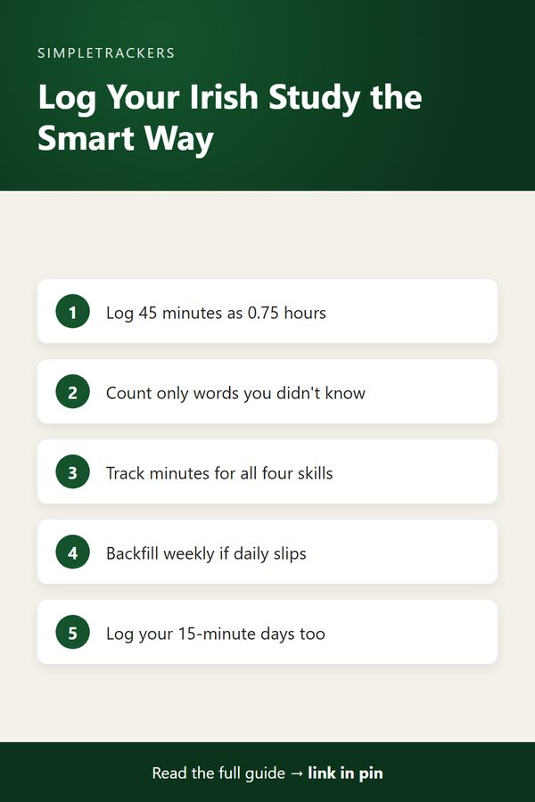

How to Use the Irish Gaelic Self-Study Progress Tracker
← Back to the Complete Irish Gaelic Study Guide
Key takeaways
- Core columns for everyone: date, hours, vocabulary, grammar, minutes for each of the four skills, streak and notes.
- Optional columns: heritage learners can log motivation, family stories and native-speaker conversation; TEG candidates can log level, section, mock scores and days to the exam.
- Log honestly: real numbers, including your 15-minute minimum days, reveal real patterns. Weekly backfilling is fine.
- Review monthly: after a month, look at time per skill, vocabulary growth, streaks and score trends to plan the next month.
Introduction: A Tool Built for Real Learners
The Irish Gaelic Self-Study Progress Tracker is designed for self-taught learners of all motivations:
- Heritage learners reconnecting with their culture.
- Hobbyists pursuing Irish for love of the language.
- Examination candidates preparing for the Teastas Eorpach na Gaeilge (TEG).
The core columns apply to everyone. Optional columns support specific use cases. This guide walks you through the tracker's structure and how to use it effectively.
Core Columns: Everyone Logs These
Every learning session gets logged with the same core fields. These apply whether you're doing a casual study hour or intensive exam prep.
| Column | What to log |
|---|---|
| Date | The day you actually studied, not the day you plan to study. Consistency matters. |
| Study Hours | Total hours spent learning Irish that day. 45 minutes = 0.75. Fractional hours accumulate into measurable progress. |
| Vocabulary Words Learned | New words or phrases learned today. Reviewed 30 flashcards? Log 30. Learned 5 new words in a reading session? Log 5. Don't count words you already knew. |
| Grammar Patterns Covered | Topics you practiced, such as conditional mutations or past tense verbs. |
| Listening Practice Minutes | Podcasts, audiobooks, videos, music, conversation. |
| Speaking Practice Minutes | Conversation with partners, language exchange apps, reading aloud, voice messages. |
| Writing Practice Minutes | Journaling, forum posts, language exchange messages, essays. |
| Reading Practice Minutes | News, books, social media, graded readers. |
| Study Streak | Consecutive days you've logged study. Even your minimum routine counts. |
| Notes | A breakthrough, a harder-than-usual day, a conversation with a native speaker. |
Why these columns matter
- Vocabulary. The goal is tracking active vocabulary growth.
- Grammar. It helps you see whether you're systematically covering the language's structure or randomly jumping around.
- Listening. Tracking it separately lets you monitor your receptive skill development.
- Speaking. This matters even if it feels awkward; tracking forces you to ensure it happens.
- Writing. Productive skill time is often underestimated; tracking makes it visible.
- Reading. Like listening, reading can feel productive without being logged; tracking reveals whether you're actually doing it.
- Streak. This is purely motivational. Seeing a streak of 15 or 30 days reinforces that you're consistent.
- Notes. They provide qualitative color to your quantitative data.
Optional Columns: For Heritage and Diaspora Learners
If you're a heritage learner or diaspora learner reconnecting with Irish through family or cultural roots, these columns capture what matters most to you:
- Cultural Motivation Note. Why are you learning Irish today? To strengthen family bonds? To participate in cultural events? To pass knowledge to your children? Logging your motivation reminds you why you started and reconnects each session to your bigger purpose.
- Family Stories Practiced. Did you learn or practice a family story, saying, or tradition in Irish? These are often the most meaningful and memorable words learners acquire. Tracking them acknowledges their importance beyond the vocabulary count.
- Conversation with Native Speaker Minutes. Total minutes spent speaking Irish with actual native speakers: family members, friends, language exchange partners. This is distinct from recorded practice or solo speaking; it's real-time interaction. It reveals how often you're actually using Irish with people who speak it natively.
Optional Columns: For TEG Exam Candidates
If you're preparing for the Teastas Eorpach na Gaeilge (TEG) certification exam, these columns guide your preparation:
- TEG Level Target. Which level are you aiming for? A1 (Absolute Beginner), A2 (Elementary), B1 (Intermediate), B2 (Upper Intermediate), C1 (Advanced), or C2 (Mastery)? Knowing your target level shapes what you study.
- TEG Section Target. Which exam component are you focusing on today? TEG exams include listening, reading, writing and speaking components. Logging your focus ensures you're preparing comprehensively rather than avoiding weak areas.
- Mock Exam Score. If you take practice exams, log your score and the date. Over time this reveals whether your score is trending upward, plateauing, or declining: critical information for adjusting your study strategy with weeks to spare.
- Days to TEG Exam. How many days until your scheduled exam? This is motivational and practical. As the date approaches, you can see whether your study intensity matches your timeline.
- Target Completion Percentage. Set a realistic target for exam performance (e.g., 75% of marks, 80%, 90%) as a reminder of what you're working toward. As exam day nears, use your actual mock exam scores to refine it.
Match intensity to the countdown
Eight weeks out? You should be in steady preparation mode. Two weeks out? You should be in high-intensity review and mock exams.
How to Log Effectively
- Log daily if you can. Ideally, log your study session the same day, while the numbers are fresh. If that doesn't work, add a weekly review session where you estimate your hours, minutes and vocabulary for the past week and log it all at once. Accuracy is better than immediacy; it's fine to backfill a week at a time.
- Be honest about numbers. Don't inflate your hours or vocabulary counts. The purpose of tracking is to give you real data, not to make yourself feel good. If you studied for 30 minutes, log 0.5 hours. If you learned three words, log three. Real numbers reveal real patterns.
- Log your minimum sessions too. On days when you only do your 15-minute minimum routine, log it. This isn't a failure; it's consistency.
Short sessions add up
A month of 15-minute sessions is 7.5 hours of study: meaningful progress. Tracking shows that consistency matters more than any single ambitious day.

Reading Your Data: Monthly and Quarterly Reviews
Once you've logged for at least a month, take time to review:
- What was your average daily study time? Your weekly study time?
- Which skill did you spend the most time on? Which got neglected?
- How many new vocabulary words did you acquire this month?
- Is your study streak growing? When do you most often miss days?
- If you're exam-prepping, what's your mock exam score trend?
These patterns guide your next month. For example:
- Weak on speaking? Prioritize conversation exchanges.
- Study best in the morning? Schedule accordingly.
- Vocabulary growth slower than you'd like? Shift your approach.
The data teaches you about yourself as a learner.
Starting Today
Get the Irish Gaelic Self-Study Progress Tracker at https://kimnet8.gumroad.com/l/kanmzp. Download it, open it today, and log your first session. You don't need to be perfect; you just need to start. The tracker is designed to work exactly as described here—straightforward, relevant to real learners, and built to reveal the patterns that matter for your Irish language journey.